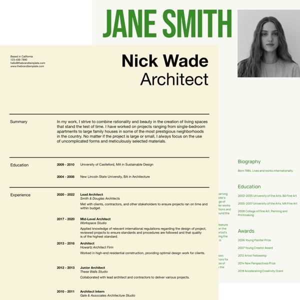
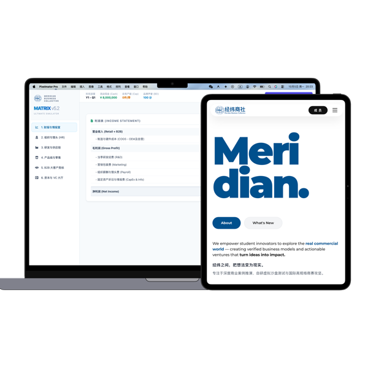

About Meridian Business Collective / 经纬商社
Dream it, and then make it.
MBC 经纬商社是泉州五中海丝校区首个由学生全权主导的先锋商业实践共同体与创新孵化室。
立足商业分析、自研虚拟沙盘推演与国际顶级商赛，把热血的想法打磨为经得起推敲的真实成果。
Make Something Remarkable.
做一些了不起的事情，正是MBC的宗旨。陪伴每一位成员成长、探索，创造属于自己的了不起。
Core Pillars & Architecture
探索经纬商社
以严谨架构为基石，以极客技术为引擎，以平等文化为底色。点击卡片查阅深层运行细节与机制档案。
运行机制
双轨运行机制
让每个人都可以参与，让有能力的人发光。
原石工坊
MBC Atelier 原石工坊
让每个人都可以加入并参与商业挑战。

理事会
The Council 理事会
每个人都有机会的平台，公开竞选与试岗考察。

技术赋能
新技术的应用与赋能
AI与计算机赋能社团管理运营，自研系统实战推演。

平等创新
透明权责与平等创新
宪章铁律杜绝资历打压，充分保障心理安全感。